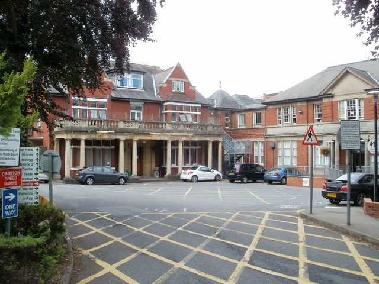

영국 웨일스 케어필리 '광부센터', 지역에너지 기금 Ynni Cymru에서 31만2,000파운드 받아 태양광·전기차 충전기 단다

겨울 난방비 세 배·폭염 땐 방 20개 중 2개만 쉼터로…웨일스 정부 이번 차수 24개 사업에 827만 파운드, 2023년 이후 누적 3,100만 파운드
영국 웨일스 케어필리의 공동체 거점 '케어필리 광부센터(Caerphilly Miners Centre)'가 웨일스 정부의 지역에너지 기금 Ynni Cymru에서 31만2,000파운드를 받아 태양광 패널과 전기차 충전기, 친환경 에너지 설비를 설치한다. 옛 케어필리 광부병원 터에 2015년 문을 연 이 센터는 자선단체가 운영하며, 일주일에 약 500명이 건강 치료와 운동 강좌, 각종 모임으로 찾고 지역 업체들도 입주해 있다. 센터는 겨울이면 난방 수요로 에너지 요금이 세 배로 뛰고, 최근 여름 폭염 때는 방 20개 가운데 2개만 더위 쉼터로 쓸 수 있었다. Ynni Cymru는 단체들이 깨끗한 에너지를 직접 만들어 요금과 탄소 배출을 줄이도록 돕는 제도로, 이번 차수에 827만 파운드를 들여 웨일스 전역 24개 사업을 지원하며 2023년 시작 이후 누적 지원액은 3,100만 파운드가 됐다. 애덤 프라이스(Adam Price) 웨일스 정부 기업·연결·에너지 장관은 학교와 의료 기관, 공동체 거점, 자선단체, 지역 업체가 함께하고 있다며 이 제도가 웨일스 사람과 공동체가 소유하고 쓰는 더 깨끗하고 값싼 에너지라는 정부 구상을 실현하고 있다고 말했다. 센터 이사 캐서린 휴스(Katherine Hughes)는 기후변화가 건물에 기대어 공동체를 돕는 자선단체에 큰 위협이라며 이번 투자가 사업의 지속 가능한 미래를 열어 줄 것이라고 밝혔다.
시민에너지 관점
웨일스 정부가 2023년부터 3,100만 파운드를 학교·자선단체·공동체 거점의 자가 발전에 쓰면서 내건 목표는 "사람과 공동체가 소유하고 쓰는" 에너지다. 보조금이 끝나면 그만이라는 우려도 있지만, 설비가 공동체 건물에 붙어 그 공동체의 것이 되면 줄어든 요금과 더위·추위를 버틸 힘이 해마다 그 자리에 남는다. 에너지 요금 부담이 가장 무거운 곳이 마을회관·복지관·작은 비영리단체라는 점에서, 지원의 목적지를 대형 사업자가 아니라 지역 공동체 소유 설비로 정한 웨일스의 설계는 눈여겨볼 만하다. 우리 정부와 지자체도 공공·공동체 시설의 태양광을 주민과 단체가 소유하는 방식으로 지원하는 전용 기금을 검토해야 한다.
출처: Caerphilly Observer 2026-10-23 Rhys Williams 원문 보기
英ウェールズ・ケアフィリーの「マイナーズセンター」、地域エネルギー基金Ynni Cymruから31万2,000ポンド…太陽光・EV充電器を設置へ
冬は暖房で光熱費3倍、猛暑時は20室中2室しか避暑所に使えず…ウェールズ政府は今回24事業に827万ポンド、2023年以降の累計3,100万ポンド
英国ウェールズ・ケアフィリーの地域拠点「ケアフィリー・マイナーズセンター（Caerphilly Miners Centre）」が、ウェールズ政府の地域エネルギー基金Ynni Cymruから31万2,000ポンドを受け、太陽光パネルや電気自動車の充電器、環境配慮型のエネルギー設備を設置する。旧ケアフィリー炭鉱労働者病院の跡地に2015年に開設されたこのセンターは慈善団体が運営し、週に約500人が健康療法や運動教室、さまざまな集まりのために訪れ、地元企業も入居している。センターは冬になると暖房需要で光熱費が3倍に跳ね上がり、最近の夏の猛暑時には20室のうち2室しか避暑所として使えなかった。Ynni Cymruは団体がクリーンなエネルギーを自らつくり、料金と炭素排出を減らせるよう支援する制度で、今回は827万ポンドでウェールズ全域の24事業を支援し、2023年の開始以来の累計支援額は3,100万ポンドとなった。ウェールズ政府のアダム・プライス（Adam Price）企業・連結・エネルギー相は、学校や医療機関、地域拠点、慈善団体、地元企業が参加しているとして、この制度がウェールズの人々と地域社会が所有し使う、よりクリーンで安いエネルギーという政府の構想を実現していると述べた。センター理事のキャサリン・ヒューズ（Katherine Hughes）氏は、気候変動は建物を拠り所に地域を支える慈善団体にとって大きな脅威だとし、今回の投資が事業の持続可能な未来を開くと語った。
市民エネルギーの視点
ウェールズ政府が2023年から3,100万ポンドを学校・慈善団体・地域拠点の自家発電に充てるにあたり掲げた目標は、「人々と地域社会が所有し使う」エネルギーだ。補助金が終われば終わりだという懸念もあるが、設備が地域の建物に据え付けられてその地域のものになれば、下がった料金と暑さ寒さに耐える力が毎年その場に残る。光熱費の負担が最も重いのが公民館や福祉施設、小さな非営利団体であることを考えれば、支援の行き先を大手事業者ではなく地域が所有する設備に定めたウェールズの設計は注目に値する。韓国の政府と自治体も、公共・地域施設の太陽光を住民と団体が所有する形で支援する専用基金を検討すべきだ。
出典: Caerphilly Observer 2026-10-23 Rhys Williams 原文を読む
英国威尔士卡菲利"矿工中心"获地方能源基金Ynni Cymru 31.2万英镑，将安装光伏和电动车充电桩
冬季供暖使能源账单涨三倍、热浪时20个房间只有2个能用作避暑点…威尔士政府本轮以827万英镑支持24个项目，2023年以来累计3,100万英镑
英国威尔士卡菲利的社区中心"卡菲利矿工中心（Caerphilly Miners Centre）"获得威尔士政府地方能源基金Ynni Cymru的31.2万英镑，将安装太阳能板、电动车充电桩和绿色能源设施。这座中心建在原卡菲利矿工医院旧址上，2015年开放，由慈善机构运营，每周约有500人前来接受健康治疗、参加运动课程和各类聚会，还有多家本地企业入驻。中心冬季因供暖需求能源账单会涨到三倍，最近夏季热浪期间，20个房间里只有2个能用作避暑点。Ynni Cymru是帮助各类机构自行生产清洁能源、降低电费和碳排放的制度，本轮投入827万英镑支持威尔士各地24个项目，自2023年启动以来累计支持金额达到3,100万英镑。威尔士政府企业、互联与能源大臣亚当·普莱斯（Adam Price）表示，学校、医疗机构、社区中心、慈善机构和本地企业都参与其中，这一制度正在实现由威尔士民众和社区拥有并使用的更清洁、更便宜能源的政府构想。中心理事凯瑟琳·休斯（Katherine Hughes）表示，对于依靠这栋建筑服务社区的慈善机构来说，气候变化是重大威胁，这笔投资将为项目带来可持续的未来。
市民能源视角
威尔士政府自2023年起把3,100万英镑用于学校、慈善机构和社区中心的自发电，提出的目标是"由民众和社区拥有并使用"的能源。有人担心补贴一结束就难以为继，但设备装在社区建筑上、归社区所有，降低的电费和抵御冷热的能力就会年复一年留在当地。能源账单负担最重的往往是村民会馆、福利设施和小型非营利机构，威尔士把支持对象定为社区所有的设备而非大型企业，这一设计值得关注。韩国政府和地方政府也应研究设立专项基金，以居民和团体拥有的方式支持公共和社区设施的光伏。
来源: 卡菲利观察报（Caerphilly Observer） 2026-10-23 Rhys Williams 查看原文
Caerphilly Miners Centre in Wales gets £312,000 from Ynni Cymru community energy fund for solar panels and EV chargers
Winter heating triples energy bills and in heatwaves only two of 20 rooms could serve as cool hubs; Welsh Government's latest round backs 24 projects with £8.27 million, taking the total since 2023 to £31 million
The Caerphilly Miners Centre, a community hub in Caerphilly, Wales, will install solar panels, electric vehicle chargers and other green energy measures with £312,000 from Ynni Cymru, the Welsh Government's community energy fund. Opened in 2015 on the site of the former Caerphilly Miners Hospital and run by a charity, the centre draws around 500 visitors a week for health therapies, exercise classes and social groups, and is home to several local businesses. Its energy bills triple in winter because of heating, and during recent summer heatwaves only two of its 20 rooms could be used as cool hubs. Ynni Cymru helps organisations generate their own clean energy to cut bills and carbon emissions; its latest round of £8.27 million supports 24 projects across Wales, bringing total funding since the scheme began in 2023 to £31 million. Adam Price, the Welsh Government's minister for enterprise, connectivity and energy, said schools, healthcare services, community hubs, charities and local businesses are taking part, and that the scheme is delivering the government's vision of greener, cheaper energy owned and used by people and communities across Wales. Trustee Katherine Hughes said climate change is a major threat to a charity that relies on its building to serve the community, and that the investment will help secure the project's future.
Citizen Energy View
In spending £31 million since 2023 on self-generation for schools, charities and community hubs, the Welsh Government has set its goal as energy "owned and used by people and communities". Some worry that the benefits end when the grants do, but when the equipment sits on a community building and belongs to that community, lower bills and resilience against heat and cold stay there year after year. Since village halls, welfare centres and small non-profits are often hit hardest by energy bills, Wales's choice to direct support to community-owned equipment rather than large developers deserves attention. Korea's central and local governments should likewise consider a dedicated fund that backs solar on public and community buildings owned by residents and local groups.
Source: Caerphilly Observer 2026-10-23 Rhys Williams Read the original